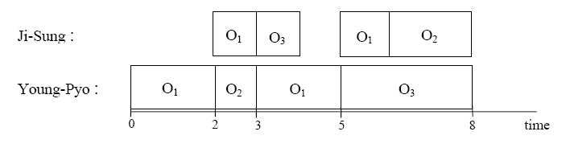

Input
Your program is to read from standard input. The input consists of TOutput
Your program is to write to standard output. Print exactly one line for each test case. The line contains the minimum time by which both Ji-Sung and Young-Pyo finish to use all the facilities. The following shows sample input and ouput for three test cases.Sample Input
3 2 1 2 2 1 2 2 1 2 1 2 2 2 1 1 3 3 2 1 2 1 2 1 3 2 1 3 1 2 1 4 4 1 2 1 3 1 3 1 2
Sample Output
4 6 8